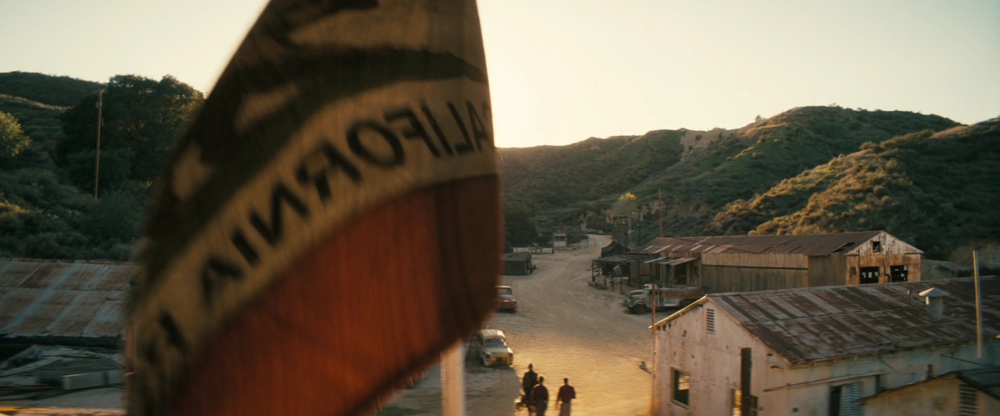

さびれた町 (Run-down town)
TVシリーズ ロケーション
LOCATION DATA

The run-down town is a location in the Fallout TV series.
In the TV series
The Handoff
The Ghoul, Maximus and Thaddeus pass through it, taking a detour on their way to New Vegas. It has a New California Republic armory storage shed to retrieve equipment for the battle against the New Vegas Strip deathclaws.Appearances
The run-down town appears only in the Fallout TV series.Gallery
Category:Fallout TV series locations
Impression
（準備中）
（準備中）